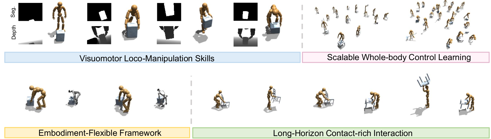

DreamMimic: Learning Visuomotor Whole-Body Loco-Manipulation via World Model

*Corresponding author: Jie Yin. †Equal contribution.

DreamMimic supports vision-based humanoid loco-manipulation through world-model-assisted policy distillation. Distilling privileged specialist teachers into a visual student enables whole-body interaction under partial observability (top left) and diverse behaviors (top right). The same framework transfers across morphologies, including SMPL-X and Unitree G1 (bottom left), and sustains long-horizon contact-rich loco-manipulation (bottom right).
Vision-based whole-body loco-manipulation on humanoid robots is challenging due to partial observability, contact-rich dynamics, and the difficulty of learning long-horizon behaviors from high-dimensional visual inputs. We present DreamMimic, a framework that distills privileged teacher policies into vision-based humanoid controllers via world-model-assisted distillation. Instead of using a Dreamer-style RSSM for planning, we repurpose it to learn predictive latent dynamics that serve as both a representation space and an action-conditioned multi-step supervision signal, while exposing compact predictive features to the student policy to reduce long-term drift. Beyond standard reconstruction objectives for proprioceptive and visual observations, we add auxiliary prediction heads for privileged state, contact, object state, and reward estimation. These heads provide additional supervision related to agent–object interaction and task progress, encouraging the latent representation to retain signals that are useful for contact-rich loco-manipulation. We further introduce Performance-Conditioned Guidance (PCG), a reward-driven adaptive distillation schedule that computes performance scores for both teacher and student to dynamically balance guidance and exploration. PCG prevents both premature teacher annealing and excessive teacher interference in challenging visual settings. Experiments on OMOMO and BEHAVE show improved tracking-based loco-manipulation performance over strong vision-based baselines, without exposing online privileged interaction states to the student at deployment. Qualitative simulations further examine morphology and simulator changes. These results suggest that world models can provide a useful mechanism for stabilizing visual policy distillation in contact-rich humanoid behaviors.
DreamMimic: a world-model-assisted framework for stable visual policy distillation. DreamMimic mitigates compounding errors under partial observability by leveraging a Dreamer-style RSSM to learn predictive state representations and enforce multi-step action-conditioned latent alignment, enabling temporally coherent behaviors for contact-rich humanoid loco-manipulation.
Structured supervision for stable DAgger+RL distillation. We use auxiliary prediction heads to provide learning signals for reward, contact, and object dynamics, which help shape predictive representations for interaction-rich behaviors. Building on this supervision, Performance-Conditioned Guidance (PCG) adaptively modulates teacher involvement based on relative teacher–student performance, stabilizing policy optimization while avoiding premature guidance decay.
Comprehensive simulation evaluation across datasets, humanoids, and simulators. Quantitative experiments on OMOMO and BEHAVE report consistent improvements in loco-manipulation performance, while qualitative simulations on the Unitree G1 and in Isaac Sim provide preliminary evidence on morphology and simulator changes.

Multiple specialist teachers trained with privileged simulation observations are consolidated into a unified privileged teacher, which guides a vision-based student via Performance-Conditioned Guidance (PCG). PCG adaptively balances teacher supervision and student exploration according to their relative performance. The student operates on non-privileged proprioception, a compact goal condition, and world-model features inferred from depth and segmentation. The goal condition jointly describes the target object pose and short-horizon robot trajectory cues, while the world model supplies predictive interaction features and action-conditioned multi-step latent supervision. This design enables the policy to exploit both task-level goals and inferred interaction cues while reducing long-horizon drift.

A Dreamer-style world model jointly learns predictive latent dynamics from visual and proprioceptive observations and provides action-conditioned multi-step latent targets to stabilize policy learning. The RSSM maintains deterministic and stochastic latent states, reconstructs visual and proprioceptive observations, and attaches auxiliary predictors for reward, privileged state, contact, and object state. At deployment, the student policy consumes the deterministic latent state and these auxiliary predictions rather than online privileged simulator states.
The videos below present qualitative results of DreamMimic on long-horizon and contact-rich whole-body loco-manipulation. DreamMimic distills privileged teacher skills into a vision-based student that operates on depth, segmentation, and proprioception. We evaluate behavior across datasets (OMOMO and BEHAVE), morphologies (SMPL-X and Unitree G1), and simulators (Isaac Gym to Isaac Sim).
@inproceedings{dreammimic2026,
title = {DreamMimic: Learning Visuomotor Whole-Body Loco-Manipulation via World Model},
author = {Jie Yin and Xingyu Lai},
booktitle = {IROS},
year = {2026}
}